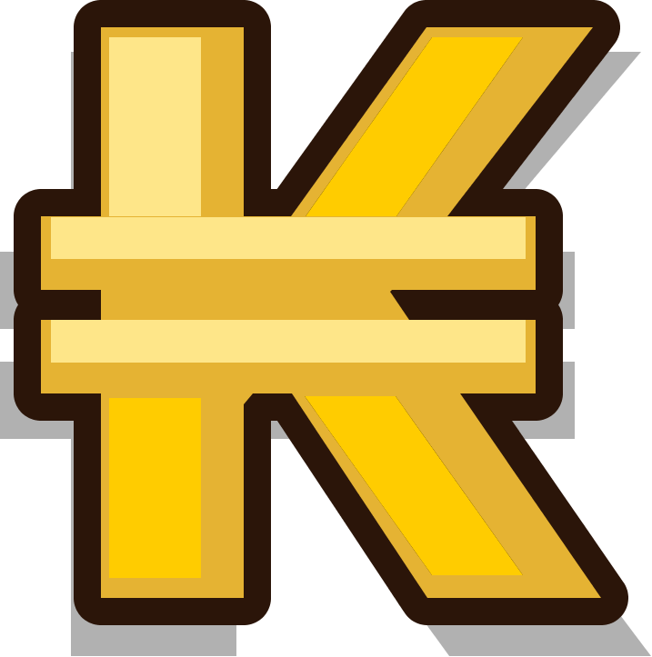

News
Mon Aventure
Après une pause de plus d'un an, j'ai réinstallé Dofus Touch sur mon téléphone.
Après avoir réappris les bases, je me suis fixé l'objectif d'avancer le plus dans le jeu avant de le réabandonner (classico).
Content de voir que le moi de l'époque avait fait quelques réservers de thunes puisque je m'élève actuellement à 3 700 000 
Iop Terre LvL 76 pour les connaisseurs. Je rush les succès et l'XP, pour les métiers on verra plus tard. Solo only pour l'instant
Je vous screen mon inventaire avec ma DD :
(Bon jet sur la pano)
Voilà, je pense pas update ce post donc j'en ferai un nouveau si je dois ajouter des trucs. Je viens de voir que ma DD a plus de bouffe, merde.
Et pour les plus clairvoyants, je suis bel et bien sur l'île Wabbit où JE PRENDS CHER

Iron I to Chall
Le défi est lancé depuis le début de la saison, passer challenger.
Cette fois c'est la bonne mais rito n'est pas avec nous. En effet après 10 games de placement, la sentance tombe : Iron I
Coup dur, certes mais c'est au contraire un moyen de traverser tout le ladder et de saluer les personnes stuck 4 life. Déjà quelques cas rencontrés sur la faille, leurs pseudos sont notés et je checkerai dans quelques mois s'ils ont progressé ou s'ils sont stuck (déjà ma petite idée en tête)
Après 25 games en ranked (placement compris) je m'élève au rank Bronze IV. Je crée un script qui updatera en temps réel mon rank ci-dessous.
Mon rank actuel :